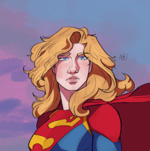

Vi sobre compactação de imagens com o GIMP, um app de design.
É muito comum dentro da T.I trabalhar com imagens, já que fazer sites, muita das vezes, pedem imagens.
E com isso, vemos sobre formatos de imagens. Aqui, vou trabalhar muito com o JPEG e o PNG, dois formatos muito conhecidos por suas funções.
O JPEG é um formato compactador. Ele vai pegar a imagem e diminuir o tamanho dela sem mexer demais na qualidade da foto. Enquanto o PNG o consegue alterar a opacidade da transparência da imagem.
E dentro de um site é muito necessário saber os tamanhos das imagens, pois um site muito pesado toma penalidades em navegadores, por exemplo, no próprio Google Chrome.
Se eu adicionar uma imagem sem mexer nas configurações do tamanho dela, se ela for grande, corre o risco da imagem ficar enorme dentro do site. Por exemplo:

Tá vendo? Vem enorme. Mas tem como ajeitar isso.
no APP GIMP, tem uma área onde arruma as proporções da imagem.
GIMP → Imagens → Redimensionar imagem.
E agora, ao inves da imagem ficar enorme desse jeito, depois de ter arrumado, fica assim:

Sempre que procurar uma imagem no google, filtre. Evitar CopyRight© ou qualquer problema é de suma importância.